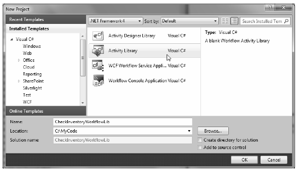
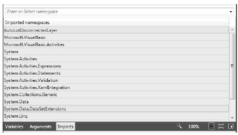
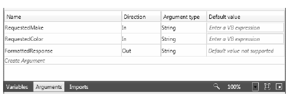
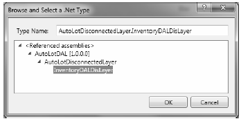
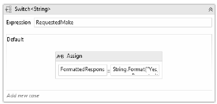
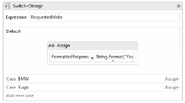
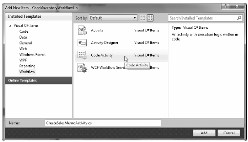
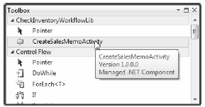
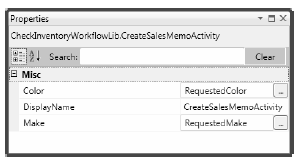
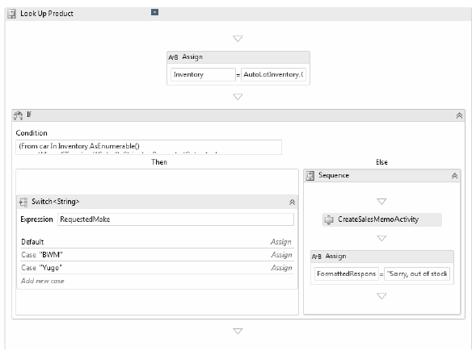

While making a Workflow Console Application is great for experimenting with the WF API, a productionready workflow will certainly need to be packaged up into a custom .NET *.dll assembly. By doing so, you can reuse your workflows at a binary level across multiple projects.
While you could begin using a C# Class Library project as a starting point, the easiest way to build a workflow library is to start with the Activity Library project, under the Workflow node of the New Project dialog. The benefits of this project type are that it will set the required WF assembly references automatically and give you a *.xaml file to create your initial workflow.
This workflow will model the process of querying the AutoLot database to see if a given car of the correct make and color is in the Inventory table. If the requested car is in stock, you will build a nicely formatted response to the host via an output parameter. If the item in not in stock, you will generate a memo to the head of the sales division requesting that they find a car of the correct color.
Create a new Activity Library project named CheckInventoryWorkflowLib (Figure 26-18). Once the project is created, rename the initial Activity1.xaml file to CheckInventory.xaml.
Figure 26-18 Building an Activity Library
Now, before you continue, close down the visual workflow designer, and view the underlying XAML definition by right clicking on your XAML file and selecting the View Code menu option. Make sure that the x:Class attribute in the root <Activity> element has been updated as so (if not, replace Activity1 with CheckInventory):
<Activity x:Class="CheckInventoryWorkflowLib.CheckInventory" ... >
Note It is always a good idea to check the x:Class value of your root activity when making a workflow library, as client programs will use this name to create an instance of the workflow.
This workflow will make use of a Sequence activity as the primary activity, rather than Flowchart. Drag a new Sequence activity onto your designer (you’ll find it under the Control Flow area of your Toolbox) and change the DisplayName property to Look Up Product.
As the name suggests, a Sequence activity allows you to easily create sequential tasks, which occur one after the other. This does not necessarily mean the children activities must follow a strict linear path, however. Your sequence could contain flow charts, other sequences, parallel processing of data, if/else branches and whatever else might make good sense for the business process you are designing.
Because your workflow will be communicating with the AutoLot database, the next step is to reference your AutoLot.dll assembly using the Add Reference dialog box of Visual Studio 2010. This example will make use of the disconnected layer, so I’d suggest you reference the final version of this assembly created in Chapter 22 (if you set a reference to the final version created in Chapter 23, you’ll also need to set a reference to System.Data.Entity.dll, as this is required by the ADO.NET Entity Framework).
This workflow will also be making use of LINQ to DataSet to query the returned DataTable in order to discover if you have the requested item in stock. Therefore, you should also set a reference to System.Data.DataSetExtensions.dll.
Once you have referenced these assemblies, click on the Imports button located at the bottom of the workflow designer. Here you will see a listing of all of the .NET namespaces that you can make use of in your workflow designer (think of this area as a declarative version of the C# using keyword).
You can add namespaces from any referenced assembly by typing in the text box mounted on the top of the Imports editor. For convenience, import AutoLotDisconnectedLayer and System.Data.DataSetExtensions. By doing so, you can reference the contained types without needing to use fully qualified names. Figure 26-19 shows some new listings of the Imports area once you are finished.
Figure 26-19 Similar to the C# using keyword, the Imports area allows you to include .NET namespaces
Next, define two new workflow wide input arguments, named RequestedMake and RequestedColor, both of which will be of type String. Like the previous example, the host of the workflow will create a Dictionary object that contains data that maps to these arguments, so there is no need to assign a default value to these items using the Arguments editor. As you might guess, the workflow will use these values to perform the database query.
As well, you can use this same Arguments editor to define an output argument named FormattedResponse of type String. When you need to return data from the workflow back to the host, you can create any number of output arguments which can be enumerated by the host when the workflow has completed. Figure 26-20 shows the current workflow designer.
Figure 26-20 Recall that workflow arguments provide a way send data to and return data from the workflow
At this point, you need to declare a member variable in your workflow which corresponds to the InventoryDALDisLayer class of AutoLot.dll. You might recall from Chapter 22 that this class allows you to get all data from the Inventory returned as a DataTable. Select your Sequence activity on the designer, and using the Variables button, create a variable named AutoLotInventory. In the Variable Type dropdown list box, pick the Browse For Types... menu option, and type in InventoryDALDisLayer (Figure 26-21).
Figure 26-21 Recall that workflow variables provide a way to declarativly define variables within a scope
Now, making sure your new variable is selected, go to the Visual Studio 2010 Properties window and click on the ellipse button of the Default property. This will open up a code editor which you can resize as you see fit (very helpful when entering lengthy code). This editor is much easier to use when entering complex code for a variable assignment. Enter the following (VB) code, which allocates your InventoryDALDisLayer variable:
New InventoryDALDisLayer("Data Source=(local)\SQLEXPRESS;" + "Initial Catalog=AutoLot;Integrated Security=True")
Declare a second workflow variable of type System.Data.DataTable named Inventory, again using the Browse For Types... menu option (set the default value of this variable to Nothing). You will be assigning the Inventory variable to the result of calling GetAllInventory() on the InventoryDALDisLayer variable in a later step.
The Assign activity allows you to set a variable to a value, which can be the result of any sort of valid code statements. Drag an Assign activity (located in the Primitives area of your Toolbox) into your Sequence activity. In the To edit box, specify your Inventory variable. Using the Properties window, click on the ellipse button of the Value property and enter the following code:
AutoLotInventory.GetAllInventory()
Once the Assign activity has been encountered in your workflow, you will have a DataTable that contains all records of the Inventory table. However, you need to discover if the correct item is in stock using the values of the RequestedMake and RequestedColor arguments sent by the host. To determine if this is the case, you will make use of LINQ to DataSet. Once you know if you have the item in stock, you will use an If activity to perform the XAML equivalent of an if/else/then statement.
Drag an If activity onto your Sequence node directly under the Assign activity. Because this activity is the XAML based way to make a simple runtime decision, you first need to configure the If activity to test against a Boolean expression. In the Condition editor, enter the following check LINQ to DataSet query:
(From car In Inventory.AsEnumerable()
Where CType(car("Color"), String) = RequestedColor And
CType(car("Make"), String) = RequestedMake Select car).Any()
This query will use the host supplied RequestedColor and RequestedMake data to fetch all records in the DataTable of correct make and color (note that the CType operator is the C# equivalent of an explicit cast operation). The call to the Any() extension method will return a true or false value based on if the result of the query contains any results.
Your next task is to configure the set of activities that will execute when the specified condition is true or false. Recall that your ultimate goal here is to send a formatted message to the user if you do indeed have the car in question. However, to spice things up a tad, you will return a unique message based on which make of automobile the caller has requested (BMW, Yugo, or anything else).
Drag a Switch<T> activity (located in the Flow Control area of the Toolbox) into the Then area of the If activity. As soon as you drop this activity, Visual Studio displays a dialog box asking for the type of the generic type parameter-specify String here. In the Expression area of your Switch activity, type RequestedMake.
You will see that a default option for the switch is already in place and is inviting you to add an activity to represent how to respond. You only need a single Assign activity; however, if you wanted to perform more complex actions, your default area might very well be a new Sequence or Flowchart.
Once you have added the Assign activity to the Default edit area (by clicking “Add Activity”), assign the FormattedResponse argument to the following code statement:
String.Format("Yes, we have a {0} {1} you can purchase",
RequestedColor, RequestedMake)
At this point, your Switch editor will look like this (Figure 26-22).
Figure 26-22 Defining the default task for a Switch activity
Now, click on the “Add New Case” link and enter BMW (without any double quotes) for the first case, and once again for a final case of Yugo (again, no double quotes). Within each of these case areas, drop an Assign activity, both of which assign a value to the FormattedResponse variable. For the case of BMW, assign a value such as:
String.Format("Yes sir! We can send you {0} {1} as soon as {2}!", _
RequestedColor, RequestedMake, DateTime.Now)
For the case of the Yugo, use the following expression:
String.Format("Please, we will pay you to get this {0} off our lot!", _
RequestedMake)
The Switch activity will now look something like the following (Figure 26-23).
Figure 26-23 The final Switch activity
As expressive as the workflow designer experience is with its ability to embed complex code statements (and LINQ queries) in your XAML file, there will certainly be times when you just need to write code in a dedicated class. There are a number of ways to do so with the WF API, but the most straightforward way is to create a class extending CodeActivity, or if your activity needs to return a value, CodeActivity<T> (where T is the type of return value).
Here, you will make a simple custom activity which will dump out data to a text file, informing the sales staff that a request has come in for a car that is currently not in the inventory system. First, activate the Project | Add New Item menu option and insert a new Code Activity named CreateSalesMemoActivity.cs (Figure 26-24).
Figure 26-24 Inserting a new Code Activity
If your custom activity requires inputs to process, they will each be represented by a property encapsulating an InArgument<T> object. The InArgument<T> class type is a WF API specific entity, which provides a way to pass through data supplied by a workflow to the custom activity class itself. Your activity will need two such properties representing the make and color of the item not in stock.
As well, a custom code activity will need to override the virtual Execute() method, which will be called by the WF runtime when this activity is encountered. Typically, this method will use the InArgument<> properties to get the workload accomplished. To get the real underlying value, you will need to do so indirectly using the GetValue() method of the incoming CodeActivityContext.
Here then is the code for your custom activity, which generates a new *.txt file describing the situation to the sales team:
public sealed class CreateSalesMemoActivity : CodeActivity { // Two properties for the custom activity public InArgument<string> Make { get; set; } public InArgument<string> Color { get; set; } // If the activity returns a value, derive from CodeActivity<TResult> // and return the value from the Execute method. protected override void Execute(CodeActivityContext context) { // Dump a message to a local text file. StringBuilder salesMessage = new StringBuilder(); salesMessage.AppendLine("***** Attention sales team! *****"); salesMessage.AppendLine("Please order the following ASAP!"); salesMessage.AppendFormat("1 {0} {1}\n", context.GetValue(Color), context.GetValue(Make)); salesMessage.AppendLine("*********************************"); System.IO.File.WriteAllText("SalesMemo.txt", salesMessage.ToString()); } }
Now that you have a custom code activity, how should you make use of it? Well, if you really wanted to deliver a polished activity, WF 4.0 does allow a way to build a custom designer for your custom code activities. However, doing so requires an understanding of WPF, as the custom designer uses many of the same techniques as you would use when building a WPF Window or . You’ll begin learning about WPF in the next chapter, so for now I’ll show you a simpler approach.
First, compile your workflow assembly. Ensuring your workflow designer is the active window within the Visual Studio 2010 IDE, examine the top area of your toolbox. You should see your custom activity is present and accounted for (Figure 26-25).
Figure 26-25 Custom code activities appear in the Visual Studio 2010 toolbox
First, drag a new Sequence activity into the Else branch of your If activity. Next, drag your custom activity into the Sequence. At this point, you can assign values to each of the exposed properties using the Properties window. Using your RequestedMake and RequestedMake variables, set the Make and Color properties of your activity as shown in Figure 26-26.
Figure 26-26 Setting the properties of your custom code activity
To complete this workflow, drag a final Assign activity into the Sequence activity of the Else branch, and set the FormattedResponse to the string value “Sorry, out of stock”. Figure 26-27 shows the final workflow design.
Figure 26-27 The completed sequential workflow
Compile your project and move onto the final part of this chapter, where you will build a client host to make use of the workflow.
Source Code The CheckInventoryWorkflowLib project is included under the Chapter 26 subdirectory.